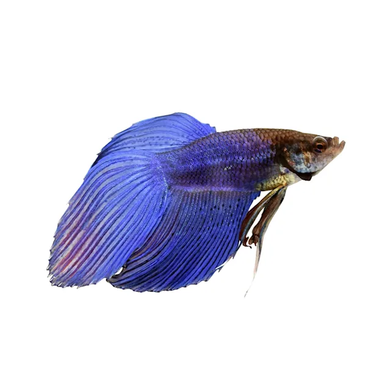
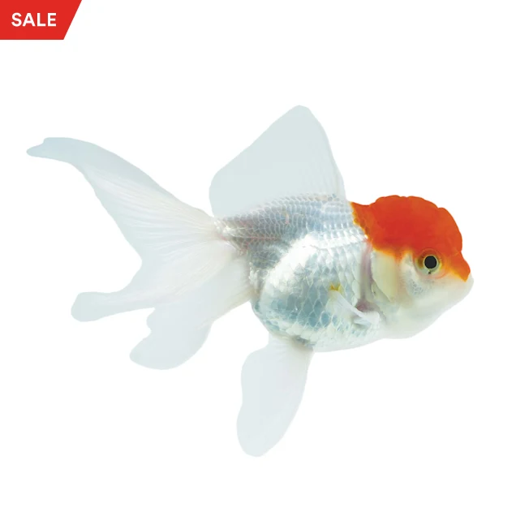
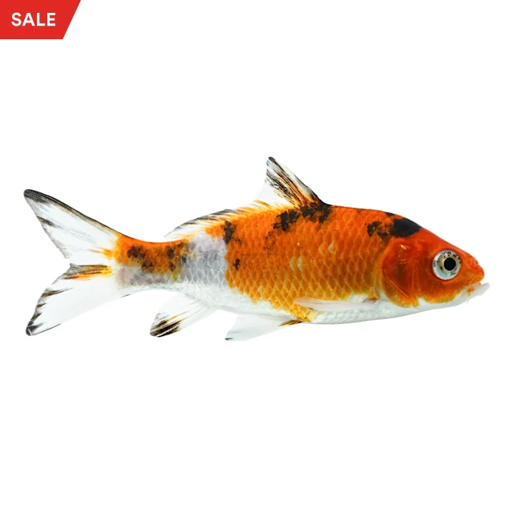
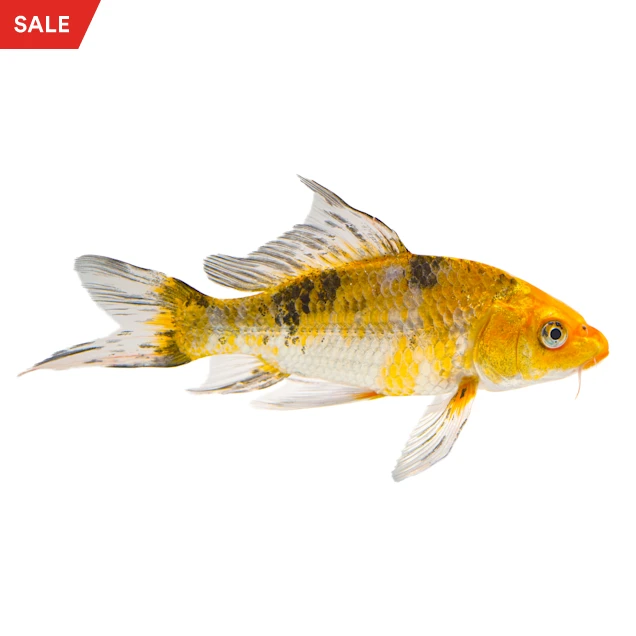

Male Butterfly Betta

The butterfly betta is a much-sought-after freshwater tropical fish. It is extremely popular, both because of its striking and unusual colors and its distinctive shape.
Rp. 10.000,00
Male Crowntail Betta

The crowntail betta fish is one of the most popular small freshwater species in the US for one main reason: their beautiful caudal fins!
Rp. 15.000,00
Male Halfmoon Betta

The halfmoon betta is a beautiful freshwater fish that’s part of the greater betta fish family. It has strikingly bright colors and exceptional half-moon-shaped fins.
Rp. 20.000,00
Male Paradise Betta

Paradise betta is a made-up name that is sometimes used as a general term to talk about the species of betta fish commonly found in pet stores (as opposed to the ones in the wild). And sometimes the name paradise betta is used as an alternate moniker for the mustard gas betta, a particular variety of betta fish.
Rp. 25.000,00
Male Rosetail Betta

The Rosetail Betta is a variation of the half-moon where the total spread of the caudal fin is larger than 180°.
Rp. 30.000,00
Male Veiltail Betta

The male of this variation has a long, flowing downwards swooping tail. It comes in many different color variations and the overall appearance is quite remarkable..
Rp. 35.000,00
Shubunkin Goldfish

The Shubunkin is a type of Goldfish that comes in a wide variety of colors patterns, typically a combination of red, black and orange speckled on a white body.
Rp. 40.000,00
Red Cap Oranda Goldfish

The Red Cap Oranda Goldfish has a pearly white body and fins with metallic scales. They can be distinguished by their large red "hood" that covers their head.
Rp. 45.000,00
Calico Ryukin Goldfish

The Calico Ryukin Goldfish has a white body with markings of red, orange and black. Each specimen is unique with their combinations of colors. All Ryukin Goldfish have a hump right behind its head, curved backbone, fate belly and long fins.
Rp. 50.000,00
Imported Koi

Assorted Imported Koi come in a variety of colors and patterns; many are platinum or metallic, which makes them all the more exciting.
Rp. 55.000,00
Domestic Koi

Assorted Domestic Koi are known to be especially hardy and are bred within the United States.
Rp. 60.000,00
Butterfly Koi

The Mixed Butterfly Koi is not identified by its colors or pattern, but by their fins. Butterfly Koi have elongated fins that flow through the water, resembling the wings of butterflies.
Rp. 65.000,00